DRAFT: 2007-09-26
2.1 What is a Molecule? The Valence Model of Chemistry
2.2 Lexical Structure of SMILES
2.3.1 Atomic Element, Hydrogens, and Charge
2.3.3 "Organic Subset" Elements
2.3.4 The Wildcard '*' Atomic Symbol
2.7.2 Definition of Aromaticity
2.10 Other Uses of Ring Numbers and Dot Bond
3.1 Scope of Stereochemistry in SMILES
3.3 Cis/Trans configuration of Double Bonds
3.4 Tetrahedral Allene-like Systems
4. SMILES Output Normalizations
4.3.4 Starting Atom and Branches
6.3 '@' for Cis/Trans around Double Bonds
7. APPENDIX 1: References and Citations
7.3 Relevant Scientific Papers
7.5 Molecule Editors that can produce SMILES
This document formally defines an open standard version of the SMILES language, a typographical line notation for specifying chemical structure. It is hosted under the banner of the Blue Obelisk project, with the intent to solicit contributions and comments from the entire computational chemistry community.
SMILES was originally developed as a proprietary standard by Daylight Chemical Information Systems. Since the introduction of SMILES in the late 1980's, it has become widely accepted as a defacto standard for exchange of molecular structures. Many independent SMILES software packages have been written in C, C++, Java, Python, LISP, and probably even FORTRAN.
At this point in the history of SMILES, is appropriate for the chemistry community to develop a new, non-proprietary specification for the SMILES language. Daylight's SMILES Theory Manual has long been the "gold standard" for the SMILES language, but as a proprietary specification, it limits the universal adoption of SMILES. We salute Daylight for their past contributions, and the excellent SMILES documentation they provided free of charge for the past two decades.
This document is intended for developers designing or improving a SMILES parser or writer. Due to the formality of this document, it is not a good tutorial for those trying to learn SMILES. This document is written with precision as the primary goal, readability is secondary.
Before defining the SMILES language, it is important to state the physical model on which it is based. The valence model of chemistry, which uses a mathematician's graph to represent a molecule. In a chemical graph, the nodes are atoms, and the edges are semi-rigid bonds that can be single, double, or triple according to the rules of valence bond theory.
This simple mental model has little resemblance to the underlying quantum-mechanical reality of electrons, protons and neutrons, yet it has proved to be a remarkably useful approximation of how atoms behave in close proximity to one another. However, the valence model is an imperfect representation of molecular structure, and the SMILES language inherits these imperfections. Chemical bonds are often tautomeric, aromatic or otherwise fractional rather than neat integer multiples. Delocalized bonds, bond-centered bonds, hydrogen bonds and various other inter-atom forces that are well characterized by a quantum-mechanics description simply don't fit into the valence model.
atom : ORGANIC_SYMBOL
| [ weight ATOMIC_SYMBOL mods ]
| atom ring_closure
;
weight : NULL | WEIGHT ;
mods : NULL | mod mods;
mod : hcount | charge | chiral;
ORGANIC_SYMBOL : B | C | c | N | n | O | o | S | P | F | Cl | Br | I | *
ATOMIC_SYMBOL : the normal atomic symbol or '*'. The first letter can be
upper or lowercase, the second letter must be lowercase.
WEIGHT : a positive integer >= 0
hcount : H | H HCOUNT ;
HCOUNT : a positive integer >= 0
charge : + | - | ++ | -- | +CHARGE | -CHARGE ;
CHARGE : an integer >= 0
bond : NULL | - | = | # | : | . | / | \ ;
rnum : DIGIT
| % DIGIT DIGIT
;
ring_closure : rnum
| bond rnum
;
bonded_atoms : atom
| atom bond atom
| atom bond bonded_atoms
;
branch : bonded_atoms ( bond bonded_atoms )
| branch ( bond bonded_atoms )
| branch ( bond branch )
;
smiles : bonded_atoms
| branch bonded_atoms
;
A SMILES file consists of zero or more SMILES strings, one per line, optionally followed by at least one whitespace character (space or tab), and other data. There can be no leading whitespace before the SMILES string on a line. The optional whitespace character and data that follows it are not part of the SMILES specification, and interpretation of this data is up to applications that use the SMILES file. Each line of the file is terminated by either a singe LF character, or by a CR/LF pair of characters (commonly called the "Unix" and "Windows" line terminators, respectively). A SMILES parser must accept either line terminator. A blank line in the SMILES file, or a line that begins with a whitespace character, should be completely ignored by a SMILES parser.
There is no formal limit to the length of a SMILES string; SMILES of over 1 million characters have been assembled for various purposes. There is no requirement that a SMILES parser must be able to parse these exceptionally long SMILES, but as a guideline, all implementations of SMILES parsers should, at a minimum, accept and correctly parse SMILES strings of 100,000 characters. If a SMILES parser encounters a string that is too long to parse, it must generate a reasonable error message and continue parsing with the next line of the SMILES file.
An atom is represented by its atomic symbol, enclosed in square brackets, []. The first character of the symbol is uppercase and the second (if any) is lowercase, except that for aromatic atoms (see below), the first character is lowercase.
Following the atomic symbol, the atom's hydrogen count and charge must be specified; both default to zero if unspecified.
Examples:
| [CH4] | methane | zero charge implied |
| [ClH] | hydrochloric acid | H1 implied, zero charge implied |
| [ClH1] | hydrochloric acid | zero charge implied |
| [Cl-] | chloride anion | H0 implied, -1 charge implied |
| [OH1-] | hydroxyl anion | -1 charge implied |
| [OH-1] | hydroxyl anion | H1 implied |
| [Cu+2] | copper cation | H0 implied |
| [Cu++] | copper cation | +2 charge, H0 implied |
Isotopic specification is placed inside the square brackets for an atom preceeding the atomic symbol; for example:
| [13CH4] | methane-13C |
| [2H+] | deuterium ion |
| [238U] | uranium 238 atom |
If no isotope is specified, an atom is assumed to have either the naturally occuring isotopes for that element, or the isotope of the element is unknown, or the isotope is unspecified. SMILES has no way to distinguish these three cases.
A special subset of elements called the "organic subset" of B, C, N,O, P, S, F, Cl, Br, I, and * (the "wildcard" atom) can be written using the only their atomic symbol (that is, without the square brackets, H-count, etc.), provided that:
The "normal valence" for these elements is defined as:
| Element | Valence |
| B | 3 |
| C | 4 |
| N | 3 or 5 |
| O | 2 |
| P | 3 or 5 |
| S | 2, 4, or 6 |
| halogens | 1 |
| * | unspecified |
Examples:
| C | methane |
| N | ammonia |
| Cl | hydrochloric acid |
Note: The remaining atom properties, chirality and ring-closures, are discussed in later sections.
The '*' symbol represents an unknown or unspecified atom in a SMILES string. It is considered a "stand-in" for the actual atom, and has an atomic weight of zero.
| Oc1(*)ccccc1 | ortho-substituted phenol |
The '*' atom does not have any specific electronic properties or valence. If specified outside of square brackets, it takes on the valence implied by its bonds. If it is inside square brackets, it takes on the valence implied by its bonds, hydrogens and/or charge.
A '*' atom can be part of an aromatic ring. When deducing the aromaticity of a ring system, the ring system is considered aromatic if there is an element which could replace the '*' and make the ring system meet the aromaticity rules (see aromaticity, below).
Atoms that are adjacent in a SMILES string are assumed to be joined by a single or aromatic bond (see aromaticity). For example:
| CC | ethane |
| CCO | ethanol |
| NCCCC | n-butylamine |
| CCCCN | n-butylamine |
Double and triple bonds are represented by '=' and '#', respectively:
| C=C | ethene |
| C#N | hydrogen cyanide |
| CC#CC | 2-Butyne |
| CCC=O | propanal |
A single bond can be explicitely represented with '-', but it is almost never necessary.
| C-C | same as: CC |
| C-C-O | same as: CCO |
| C-C=C-C | same as: CC=CC |
Note: The remaining bond symbols, ":.\/", are syntactically equivalent to the single, double and triple-bond symbols (they may appear anywhere a bond symbol is allowed), but the semantics are discussed in later sections.
An atom with three or more bonds is called a branched atom, and is represented using parentheses.
| 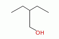 | CCC(CC)CO | 2-Ethyl-1-butanol |
Branches can be nested or "stacked" to any depth:
| 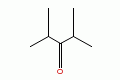 | CC(C)C(=O)C(C)C | 2,4-dimethyl-3-pentanone |
| pic here | OCC(CCC)C(C(C)C)CCC | 2-propyl-3-isopropyl-1-propanol |
| 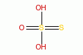 | OS(=O)(=S)O | thiosulfate |
In a SMILES string such as "C1CCCCC1", the first occurance of a ring-closure number (an "rnum") creates an "open bond". When that same rnum is encountered later in the string, a bond is made between the two atoms, which typically forms a cyclic structure.
| 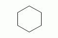 | C1CCCCC1 | cyclohexane |
| 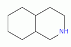 | N1CC2CCCC2CC1 | perhydroisoquinoline |
If a bond symbol is present between the atom and rnum, it must be present on both bonded atoms.
| C=1CCCCC=1 | cyclohexene | |
| C=1CCCC1 | invalid | |
| C1CCCC=1 | invalid | |
| C-1CCCC=1 | invalid |
Ring closures must be matched pairs in a SMILES string, for example, "C1CCC" is not a valid SMILES.
It is permissable to re-use ring-closure numbers. Once a particular number has been encountered twice, that number is available again for subsequent ring closures.
| 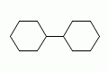 | C1CCCCC1C1CCCCC1 | dicyclohexyl | both SMILES are valid |
| C1CCCCC1C2CCCCC2 | dicyclohexyl |
Note that the ring number zero is valid, for example cyclohexane can be written "C0CCCCC0".
Two-digit ring numbers are permitted, but must be preceeded by the percent "%" symbol, such as "C%25CCCCC%25" for cyclohexane. Three-digit numbers and larger are never permitted. However, note that three digits are not invalid; for example, "C%123" is the same as "C3%12", that is, an atom with two rnum specifications.
The digit(s) representing a ring-closure are interpreted as a number, not a symbol, and two rnums match if their numbers match. Thus, C1CCCCC%01 is a valid SMILES and is the same as C1CCCCC1. Likewise, C%00CCCCC%00 is a valid SMILES.
A single atom can have several ring-closure numbers, such as this spiro atom:
| 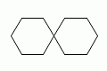 | C12(CCCCC1)CCCCC2 | name? |
Aromaticity can be represented in one of two ways in a SMILES. The Kekulé form is always acceptable. For convenience and to provide a normalized form for output, an atom symbol that begins with a lowercase letter is aromatic. For example:
| 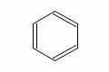 | c1ccccc1 C1=CC=CC=C1 | benzene |
| 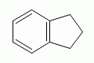 | c1ccc2CCCc2c1 C1=CC=CC(CCC2)=C12 | indane |
| 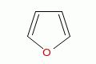 | c1occc1 C1OC=CC=C1 | furan |
Aromaticity is deduced and/or confirmed by a SMILES parser. In an aromatic system, all atoms in the ring system must be sp2 hybridized, and the number of Pi electrons must meet Hückel's 4N+2 criterion.
This meaning of aromaticity for SMILES is strictly for cheminformatics purposes. It is not intended to imply anything about the physical or chemical properties of a substance. In many or most cases, the SMILES definition of aromaticity will match the chemist's notion of what is aromatic, but in some cases it will not. The SMILES definition of aromaticity is designed to facilitate normalization of SMILES, not to predict chemical properties.
This definition of aromaticity needs considerable work. For a good summary of the question of aromaticity, see:
http://wiki.cubic.uni-koeln.de/cdkwiki/doku.php?id=smiles_aromaticity
The definition below is the one that Daylight has described in public meetings, but I believe there are more subtle rules that Daylight actually use in their SMILES Toolkit. -- CJ
The formal meaning of a lowercase "aromatic" element in a SMILES string is that the atom is in the sp2 electronic state. When generating a normalized SMILES, all sp2 atoms are written using a lowercase first character of the atomic symbol. When parsing a SMILES, a parser must note the sp2 designation of each atom on input, then when the parsing is complete, the SMILES software must verify that electrons can be assigned without violating the valence rules, consistent with the sp2 markings, the specified or implied hydrogens, external bonds, and charges on the atoms.
This implies that the lowercase atomic symbols do not necessarily represent aromatic atoms. For example:
| 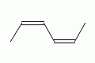 | CccccC CC=CC=CC |
2,4-hexadiene (both SMILES are valid) |
| 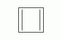 | c1ccc1 C1=CC=C1 |
cyclobutadiene (both SMILES are valid) |
| CcccC | Invalid SMILES electrons can't be assigned |
Even numbers of adjacent lower case "c" or "n" are interpreted as conjugated chains. So cccc is 1,3 butadiene, Ccc is propene, C1ccccC1 is 1,3 cyclohexadiene and CnnC is azomethane.
Hydrogens in a SMILES can be represented in three different ways:
| implicit hydrogen | C | methane | h-count deduced from normal valence (4) |
| atom property | [CH4] | methane | h-count specified for heavy atom |
| explicit hydrogens | [H]C([H])([H])[H] | methane | hydrogens represented as normal atoms |
All three forms are equivalent. However, some situations require that one form must be used:
A hydrogen that meets one of the following criteria must be represented as an explicit atom:
It is permissible to use a mixture of an atom h-count and explicit hydrogen. In such a case, the atom's hydrogen count is the sum of the atomic h-count property and the number of attached hydrogens. For example:
| [CH4] | methane |
| [H][CH2][H] | methane |
| [2H][CH3]C | deuteroethane |
The period "." (also called a "dot bond") is syntactically a bond symbol, but it means that the atoms to its left and right are not bonded. The most common use of the dot-bond symbol is to represent disconnected and ionic compounds.
| 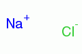 | [Na+].[Cl-] | sodium chloride |
| 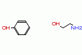 | Oc1ccccc1.NCCO | phenol, 2-amino ethanol |
| 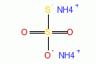 | [NH4+].[NH4+].[O-]S(=O)(=O)[S-] | diammonium thiosulfate |
The dot can appear anywhere that a bond symbol is allowed, for example, the phenol example above can also be written:
| c1cc(O.NCCO)ccc1 | phenol, 2-amino ethanol | |
| Oc1cc(.NCCO)ccc1 | phenol, 2-amino ethanol |
The second example above is an odd, but legal, use of parentheses and the dot bond, since the syntax allows a dot anywhere a regular bond could appear.
Although dot-bonds are commonly used to represent compounds with disconnected parts, a dot-bond does not in itself mean that there are disconnected parts in the compound. See the following section regarding ring digits for some examples that illustrate this.
A ring-number specifications ("rnum") is most commonly used to specify a ring-closure bond, but when used with the "." dot-bond symbol, it can also specify a non-ring bond. Two rnums in a SMILES mean that the two atoms are bonded. A dot-bond "." means that the atoms to which it is adjacent in the SMILES string are not bonded to each other. The following SMILES illustrate this feature of SMILES:
| CC | C1.C1 | ethane |
| CCC | C1.C12.C2 | propane |
| 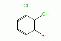 | c1c2c3c4cc1.Br2.Cl3.Cl4 | 1-bromo-2,3-dichlorobenzene |
This feature of SMILES provides a convenient method of enumerating the molecules of a combinatorial library using string concatenation.
A SMILES string can specify the cis/trans configuration around a double bond, and can specify the chiral configuration of specific atoms in a molecule.
SMILES strings do not represent all types of stereochemistry. Examples of stereochemistry that cannot be encoded into a SMILES include:
SMILES uses an atom-centered chirality specification, in which the atom's left-to-right order in the SMILES string itself is used as the basis for the chirality marking.
| Tetrahedral Chirality | |
| look from N toward C (chiral center)... | list the neighbors anticlockwise |
| 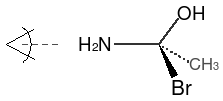 | N[C@](Br)(O)C |
| ...or clockwise | |
| N[C@@](Br)(C)O | |
For the structure above, starting with the nitrogen atom, one "looks" toward the chiral center. The the remaining three neighbor atoms are written by listing them in anticlockwise order using the '@' chiral property on the atom, or in clockwise order using the '@@' chiral property, as illustrated above. The '@' symbol is a "visual mnemonic" in that the spiral around the character goes in the anticlockwise direction, and means "anticlockwise" in the SMILES string (thus, '@@' can be thought of as anti-anticlockwise).
A chiral center can be written starting from any of its neighbor atoms, and the choice of whether to list the remaining neighbor in clockwise or anticlockwise order is also arbitrary. The following SMILES are all equivalent and all specify the exact same chiral center illustrated above:
| N[C@](Br)(O)C | Br[C@](O)(N)C |
| O[C@](Br)(C)N | Br[C@](C)(O)N |
| C[C@](Br)(N)O | Br[C@](N)(C)O |
| C[C@@](Br)(O)N | Br[C@@](N)(O)C |
If one of the neighbor atoms is a hydrogen and is represented as an atomic property of the chiral center (rather than explicitely as [H]), then it is considered to be the first atom in the clockwise or anticlockwise accounting. For example, if we replaced the bromine in the illustration above with a hydrogen atom, its SMILES would be:
| N[C@H](O)C |
Note: Daylight's chirality specification is much more complete than this, and includes square planar, octahedral, and trigonal-bipyramidal configurations. Each of these is a assigned a symbol, e.g. '@' is simply a shorthand for '@TH1'. This section should be extended to include the full chirality specification, even though most non-Daylight SMILES parsers are not capable of processing these chiral configurations.
The configuration of atoms around double bonds is specified by the bond symbols '/' and '\'. These symbols always come in pairs, and indicate cis or trans with a visual "same side" or "opposite side" concept. That is:
| 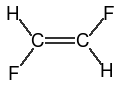 | F/C=C/F F\C=C\F |
trans-difluoroethene (both SMILES are equivalent) |
| 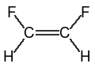 | F\C=C/F F/C=C\F |
cis-difluoroethene (both SMILES are equivalent) |
The "visual interpretation" of the '/' and '\' symbol is that they are thought of as bonds that "point" above or below the allenal carbon. That is, "F/C=C/Br" means "The F is below the first carbon, and the Br is above the second carbon," leading to the interpretation of a trans configuration.
This notation can be confusing when parentheses follow one of the allenal carbons:
|
F/C=C/F C(\F)=C\F |
trans-difluoroethene |
|
F\C=C/F C(/F)=C/F |
cis-difluoroethene |
The "visual interpretation" of the "up-ness" or "down-ness" of each single bond is relative to the carbon atom, not the double bond, so the sense of the symbol changed when the fluorine atom moved from the left to the right side of the allenal carbon atom.
Note: This point was not well documented in earlier SMILES specifications, and several SMILES interpreters are known to interpret the '/' and '\' symbols incorrectly.
A SMILES with conflicting up/down specifications is invalid:
| C/C(\F)=C/F | Invalid SMILES: Both the methyl and fluorine are "down" relative to the first allenal carbon. |
It is permissible, but not required, that every atom attached to a double bond be marked. As long as at least two neighbor atoms, one on each end of the double bond, is marked, the "up-ness" or "down-ness" of the unmarked neighbors can be deduced.
| F/C(C)=C/F | trans-difluoro configuration, position of methyl is implied |
Extended cis and trans configurations can be specified for conjugated allenes with an odd number of double bonds:
| F/C=C=C=C/F | trans-difluorobutatriene |
| F/C=C=C=C\F | cis-difluorobutatriene |
Extended tetrahedral configurations can be specified for conjugated allenes with an even number of double bonds. The normal tetrahedral rules using '@' and '@@' apply, but the "neighbor" atoms to which the chirality refers are at the ends of the allenal system. For example:
| 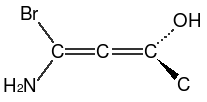 | NC(Br)=[C@]=C(O)C |
To determine the correct clockwise or anticlockwise specification, the allene is conceptually "collapsed" into a single tetrahedral chiral center, and the resulting chirality is marked as a property of the center atom of the extended allene system.
SMILES allows partial stereochemical specifications. It is permissible for some chiral centers or double bonds to have stereochemical markings in the SMILES, while others in the same SMILES string do not. For example:
| F/C=C/C/C=C\C | completely specified |
| F/C=C/CC=CC | partially specified |
| N1[C@H](Cl)[C@@H](Cl)C(Cl)CC1 | partially specified |
A wide variety of SMILES strings are acceptable as input. For example, all of the following represent ethanol:
| CCO | ethanol |
| OCC | ethanol |
| C(O)C | ethanol |
| [CH3][CH2][OH] | ethanol |
| [H][C]([H])([H])C([H])([H])[O][H] | ethanol |
However, it is desirable to write SMILES in more standard forms; the first two forms above are preferred by most chemists, and require fewer bytes to store on a computer. Several levels of normalization of SMILES are recommended for systems that generate SMILES strings. Although these are not mandatory in any sense, they should be considered guidelines for software engineers creating SMILES systems.
The simplest "normalization" is no normalization. SMILES can be written in any form whatsoever, as long as they meet the rules for SMILES. Some examples of systems that might produce un-normalized SMILES are:
The "standard form" of a SMILES is designed to produce a compact SMILES, and one that is human readable (for smaller molecules).
Note: In the example below, the "Wrong" SMILES examples are all valid SMILES, but are "wrong" in the sense that they are not the preferred form for standard normalization.
| Correct | Wrong | Normalization Rule |
| CC | [CH3][CH3] | Write atoms in the "organic subset" as bare atomic symbol whenever possible. |
| [CH3-] | [CH3-1] | If the charge is +1 or -1, leave off the digit. |
| C[13CH](C)C | C[13CH1](C)C | If the hydrogen count is 1, leave off the digit. |
|
[CH3-] C[C@H](Br)Cl |
[C-H3] C[CH@](Br)Cl |
Always write the atom properties in the order: Chirality, hydrogen-count, charge. |
| [CH3-] | [H][C-]([H])[H] | Represent hydrogens as a property of the heavy atom rather than as explicit atoms, unless other rules (e.g. [2H]) require that the hydrogen be explicit. |
| Correct | Wrong | Normalization Rule |
| CC | C-C | Never write '-' (single bond) or ':' (aromatic bond). Bonds are single or aromatic by default (as appropriate), and it is never necessary to include them in a SMILES. |
| c1ccccc1 | c:1:c:c:c:c:c:1 |
| Correct | Wrong | Normalization Rule |
| c1ccccc1C2CCCC2 | c1ccccc1C1CCCC1 | Don't reuse ring-closure digits. |
| c1ccccc1C2CCCC2 | c0ccccc0C1CCCC1 | Begin ring numbering with 1, not zero (or any other number) |
| CC1=CCCCC1 | CC=1CCCCC=1 | Avoid making a ring-closure on a double or triple bond. For the ring-closure digits, choose a single bond whenever possible. |
| C1CC2CCCCC2CC1 | C12(CCCCC1)CCCCC2 | Avoid starting a ring system on an atom that is in two or more rings, such that two ring-closure bonds will be on the same atom. |
| C1CCCCC1 | C%01CCCCC%01 | Use the simpler single-digit form for rnums less than 10. |
| Correct | Wrong | Normalization Rule |
| OCc1ccccc1 | c1cc(CO)ccc1 | Start on a terminal atom if possible. |
| CC(C)CCCCCC | CC(CCCCCC)C | Try to make "side chains" short; pick the longest chains as the "main branch" of the SMILES. |
| OCCC | CCCO | Start on a heteroatom if possible. |
| CC | C1.C1 | Only use dots and ring-closure bonds for disconnected components. |
| Correct | Wrong | Normalization Rule |
| c1ccccc1 | C1=CC=CC=C1 | Write the aromatic form in preference to the Kekulé form. |
| Correct | Wrong | Normalization Rule |
| BrC(Br)C | Br[C@H](Br)C | Remove chiral markings for atoms that are not chiral. |
| FC(F)=CF | F/C(/F)=C/F | Remove cis/trans markings for double bonds that are not cis or trans. |
A Canonical SMILES is one that follows the Standard Form above, and additionally, always writes the atoms and bonds of any particular molecule in the exact same order, regardless of the source of the molecule or its history in the computer. Here are a few examples of Canonical versus non-Canonical SMILES:
| Canonical SMILES | Non-canonical | Name |
| OCC |
CCO C(C)O |
ethanol |
| Oc1ccccc1 |
c1ccccc1O c1(O)ccccc1 c1(ccccc1)O |
phenol |
The primary use of Canonical SMILES is in cheminformatics systems. A molecule's structure, when expressed as a canonical SMILES, will always yield the same SMILES string, which allows a chemical database system to:
Canonical SMILES should not be considered a universal, global identifier (such as a permanent name that spans the WWW). Two systems that produces a canonical SMILES may use different rules in their code, or the same system may be improved or have bugs fixed as time passes, thus chaning the SMILES it produces. A Canonical SMILES is primarily useful in a single database, or a system of related databases or information, in which all molecules were created using a single canonicalizer.
The rules (algorithms) by which the canonical ordering of the atoms in a SMILES are generated are quite complex, and beyond the scope of this document. There are many chemistry and mathematical graph-theory papers describing the canonical labeling of a graph, and writing a canonical SMILES string. See the Appendix for further information.
Those considering Canonical SMILES for a database system should also investigate InChI, a canonical naming system for chemicals that is an approved IUPAC naming convention.
Several SMILES-generating systems are in use that either generate incorrect SMILES, or that interpreted some of the ambiguous features of the original SMILES specification in different ways. Although these SMILES are illegal according to the formal SMILES specification, it is often useful to parse them, in order to make use of the information that accompanies these SMILES.
These "relaxed" SMILES rules should only be allowed when the user (presumably after thinking about the consequences) requests it. A SMILES parser that implements allows any or all of these "relaxed" rules must not do it by default. The user must specifically request these relaxed rules before a parser can accept such SMILES.
The following table lists "relaxed" rules that SMILES parsers may accept.
| Rule | Example | Interpred as... | Details |
| Extra parentheses | C((C))O | C(C)O | Extra parentheses are ignored in places where there is no ambiguity as to the meaning. Note that the form "(CO)N" is never allowed, since it isn't clear which atom the nitrogen should connect to. |
| C((C))O | C(C)O | ||
| (N1CCCC1) | N1CCCCC1 | ||
| Misplaced dots | [Na+]..[Cl-] | [Na+].[Cl-] | Two or more dot-bonds in a row are condensed into one. A leading or trailing dot-bond is ignored. Note that a dot that starts a branch is legal in strict SMILES; for example, C1CC(.[Na+])CC1[O-] is a legal (though strange) SMILES. |
| .CCO | CCO | ||
| CCO. | CCO | ||
| Mismatched Ring Bonds | C1CCC | CCCC | Mismatched ring bonds are ignored. Note that this is almost always a bad idea. For example, "C1CCCCC2" is almost certainly supposed to be cyclohexane "C1CCCCC1", but with "relaxed" parsing would be interpreted as hexane. |
| Invalid Cis/Trans specification | C/C=C | CC=C | Mismatched or incomplete cis/trans bonds are ignored. |
| C/C=CC | CC=CC | ||
| CC/=C/C | CC=CC | ||
| Conflicting cis/trans specification | C/C(\F)=C/C | CC(F)=CC | Conflicting cis/trans bonds are ignored. (In this case, both the methyl and fluorine on the left are shown as trans to the methyl on the right, an impossible configuration.) |
| D and T | D[CH3] | [2H][CH3] | The symbols "D" and "T" are treated as synonyms for [2H] and [3H]. |
| T[CH3] | [3H][CH3] |
Daylight proposed, and OpenEye actually implemented, an extension that specifies bonds to external R-groups. An external R-group is specified using ampersand '&' followed by a ring-closure specification (either a digit, or % and two digits). However, unlike ring-closures, the bond is to an external, unspecified R-group. Example: "n1c(&1)c(&2)cccc1" - 2,3-substituted pyridine.
OpenEye implemented quadruple bonds using the '$' symbol; the example they cite is octachlorodirhenate (III), "[Rh-](Cl)(Cl)(Cl)(Cl)$[Rh-](Cl)(Cl)(Cl)Cl".
Daylight (Weininger) proposed, but never implemented, an extension for crystals and polymers. Daylight also used the ampersand '&' character, (which may conflict with the R-group proposal, above), but with the added rule that if a number appears more than once, it creates a repeating unit.
| c1ccccc1C&1&1 | polystyrene |
| C&1&1&1&1 | diamond |
| c&1&1&1 | graphite |
The '/' and '\' marks for cis/trans bonds seem simple on the surface but are problematic for complex systems. For example, in a long series of conjugated double bonds, changing the configuration of one bond can require rewriting dozens of bond symbols.
More importantly, there is a theoretical flaw with the use of '/' and '\'. In a cyclo-ene (name??) ring with an even number of double bonds, it is not possible to write a valid SMILES. (Recall that '/' and '\' reverse sense if moved from the left to the right of the atom, thus "C/1=C/CCCCCCC1" represents a cis configuration even though '/' appears twice.)
| C/1=C/C=C\C=C/C=C\1 | Illegal SMILES |
The SMILES above is illegal because the first and second "C1" have opposite bond symbols '/' versus '\', so the single bond that was "broken" to create the ring has to be both "up" and "down". This logical flaw follows from using "up" and "down" in a linear notation, when in fact the atoms form a circle.
The proposed syntax for cis/trans configurations uses the '@' symbol on the allenal atoms. For example:
| F[C@@H]=[C@H]F F[C@H]=[C@@H]F |
trans-difluoroethene | |
| F[C@H]=[C@H]F F[C@@H]=[C@@H]F |
cis-difluoroethene |
Interpretation of '@' and '@@' follows the tetrahedral convention: The atoms, as encountered in the SMILES string, are either in anticlockwise '@' or clockwise '@@' order as viewed on the page. Since cis/trans configurations are planar, they can also be "viewed from underneath the page", which results in the two valid SMILES shown for each compound, above.
Note that in all cases, cis and trans are easy for the chemist to distinguish visually: A trans form always has opposite "clock-ness" (@,@@ or @@,@), and the cis form always has the same "clock-ness" (@,@ or @@,@@) for the allenal atoms.
This proposed form of cis/trans specification using '@' and '@@' does not suffer from the theoretical flaw illustrated above:
| [C@H]1=[C@@H][C@@H]=[C@@H][C@@H]=[C@@H][C@@H]=[C@@H]1 | cyclooctatetraene |
Note that the first allenal carbon must be represented as '@' since the '1' follows the H, whereas the rest of the allenal carbons use '@@' to characterize the cis configuration of each bond. Since this is a specification on the atom, rather than the single bond, no conflict arises at the ring-closure bond.
This section needs considerable work. The following text is courtesy Chris Morley, who commented: "I guess the last paragraph doesn't look too good in a formal specification. There are two reasons for the frailty: lack of proof that the radical and aromatic uses can always be unambigous (I doubt anybody has tried); and a known deficiency in the parser." However, it is a good starting point...
A single lowercase symbol is interpreted as a radical center. CCc is an alternative to CC[CH2] and is the 1-propyl radical; CcC or C[CH]C is the 2-propyl radical, Co is the methoxy radical. An odd number of adjacent lowercase symbols is a delocalised conjugated radical. So Cccccc is CC=CC=C[CH2] or CC=C[CH]C=C or C[CH]C=CC=C Lowercase "c" or "n" can be used in a ring: C1cCCCC1 is the cyclohexyl radical.
The use of the non-aromatic lowercase symbol is a shorted form with improved intelligibilty that allows the use of implicit hydrogen in radicals. However it is intended only for simple unambiguous molecules and is not reliable when combined with aromatic atoms.
Blue Obelisk http://blueobelisk.sourceforge.net/
Daylight http://www.daylight.com/dayhtml/doc/theory/theory.smiles.html OpenEye http://www.eyesopen.com/docs/html/pyprog/TheSMILESLineNotation.html http://www.eyesopen.com/docs/html/pyprog/DaylightSMILES.html OpenBabel http://openbabel.sourceforge.net/wiki/Radicals_and_SMILES_extensions http://openbabel.sourceforge.net/wiki/SMILES Wikipedia http://en.wikipedia.org/wiki/Simplified_molecular_input_line_entry_specification
CDK http://almost.cubic.uni-koeln.de/cdk/cdk_top Marvin http://umbbd.msi.umn.edu/search/marvin/doc/user/smiles-doc.html RDKit http://www.rdkit.org/ Frowns http://frowns.sourceforge.net/frowns.html PerlMol.org http://search.cpan.org/~itub/Chemistry-File-SMILES-0.45/SMILES.pm InChI http://www.iupac.org/inchi/ http://inchi.info/ http://en.wikipedia.org/wiki/International_Chemical_Identifier
David Weininger (1988) SMILES, a Chemical Language and Information System. 1. Introduction to Methodology and Encoding Rules, Journal of Chemical Information and Computer Sciences 28:31-36. David Weininger, Arthur Weininger, and Joseph L Weininger (1989) SMILES 2. Algorithm for Generation of Unique SMILES Notation Journal of Chemical Information and Computer Sciences 29:97-101. Morgan's original canonicalization paper Relevant papers from Stanford's DENDRAL and CANGEN projects?
JME CACTVS ISISDraw? ChemDraw (Firefly - to be renamed) ACD/ChemSketch MarvinSketch http://www.chemaxon.com/product/msketch.html
Copyright © 2007, Craig A. James
This document is licensed under the Creative Commons Deed, "Attribution - Non Commercial 2.0".
You are free:
under the following conditions:
For any reuse or distribution, you must make clear to others the license terms of this work. Any of these conditions can be waived if you get permission from the copyright holder. Your fair use and other rights are in no way affected by the above.